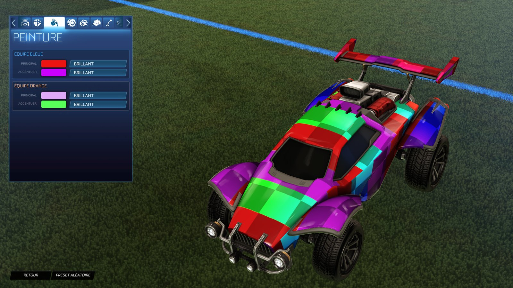
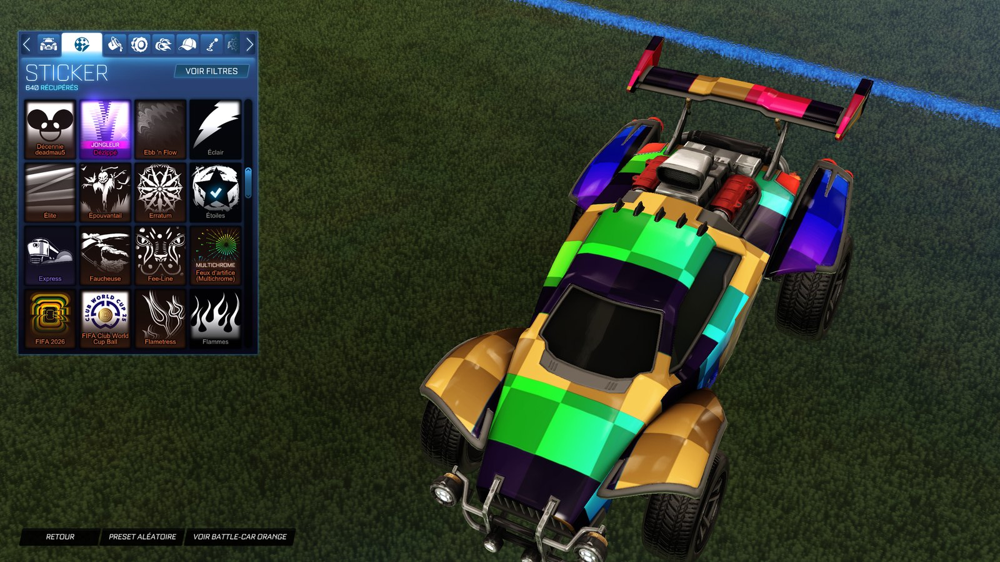

Item swaps
Equip an item you own, see any other one instead: wheels, boosts, decals, toppers, antennas, goal explosions and more.
Item swaps, custom decals in real colors, your own ball, team color palettes and Workshop maps — straight from your game files. Every change is backed up and undone in one click.

ALXS-RL-Mod edits only your local game files. Nothing is injected into the game and its network traffic is never touched. Only you see the result.
Equip an item you own, see any other one instead: wheels, boosts, decals, toppers, antennas, goal explosions and more.
AlphaConsole-style packs where the image keeps its own colors and chosen zones take your primary and accent colors. Universal decals too.
Put your own image on the standard ball.
Replace the game's primary and accent color pickers with your own palette.
Community maps from bakkesplugins, Lethamyr or your own files, swapped in even while the game runs.
Save a whole loadout and switch to it in one click. Share it with a code.
Session record, live match and in-game overlay from the game's official Stats API. Optional MMR from tracker.gg.
Bring your Workshop maps, AlphaConsole decal packs and balls into the app in one step.
Backups for every file, one-click restore, automatic rebuild after game updates and auto-updates.
Three steps, no configuration file to edit.
keys.txt to enable swaps, decals and the ball — the app cannot ship these keys.
Yes. It is free and open source under the GPL-3.0 license. The code is on GitHub.
No. It never injects code and never touches network traffic: it only edits local game files, like a manual file mod, with a backup of each one.
No. Swaps, decals, palettes and the ball are local: only you see them. Other players see your real items.
The app works on local files only. Modifying game files still goes against the game's terms of use, so use it at your own risk.
The Rocket League modding community shares an up-to-date list of package keys (for example alongside package tools such as RLUPKTool). The app does not ship them; import the file from the welcome screen or the settings.
Windows with the Epic Games version of Rocket League only, for now.
Settings → Restore the stock game, or uninstall the app: the uninstaller puts the original files back first.
Free download for Windows. Open source on GitHub.